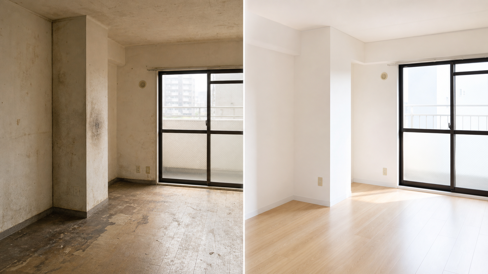

自社調べ／
特殊清掃・原状回復なら結 清掃。清掃から消臭・原状回復まで一括でご相談いただけます。
特殊清掃から
どのような現場でも、特殊清掃専門スタッフが
24時間365日
相談0円
出張0円
見積0円
即日対応をお約束いたします！
実績・信頼
突然の現場にも、
最短即日で
向き合います。
ご遺族、
深夜・早朝も
加盟店

見積り後の追加請求なし
清掃・
近隣に配慮した 静かな清掃
必要に応じて社名のない車両で訪問。ご事情を
加盟スタッフが 最寄りから急行
清掃・
対応サービス
清掃から原状回復まで、
必要な作業を一括で。
清掃・原状回復の
特殊清掃
孤独死、
汚染物撤去
体液・血液の
消臭脱臭
清掃後も残る
害虫駆除
清掃と
遺品整理
遺品整理、
原状回復
清掃後の
火災・水害復旧
すす落とし、
よくある不安
初めてのことで、
不安なのは当然です。
見積もりだけでも大丈夫ですか？
はい。
あとから料金が増えませんか？
清掃・原状回復の
近所に知られず依頼できますか？
可能な範囲で
清掃から原状回復までまとめて頼めますか？
はい。
管理会社からの依頼もできますか？
賃貸物件、
清掃・原状回復の流れ
ご連絡から、 最短その日に現場へ。
電話またはWEBで 清掃・原状回復を相談
分かる範囲で
加盟スタッフが 最寄りから訪問
清掃・
納得いただいてから 清掃・原状回復へ
特殊清掃、
お客様の声
突然の出来事に 向き合った
お客様から。
公開時は、
60代男性・ご遺族
離れて暮らす
40代女性・賃貸オーナー
消臭から
50代女性・ご遺族
近隣に
無料相談
清掃・原状回復の
お悩みを
まとめてご相談。
ニオイ・害虫で